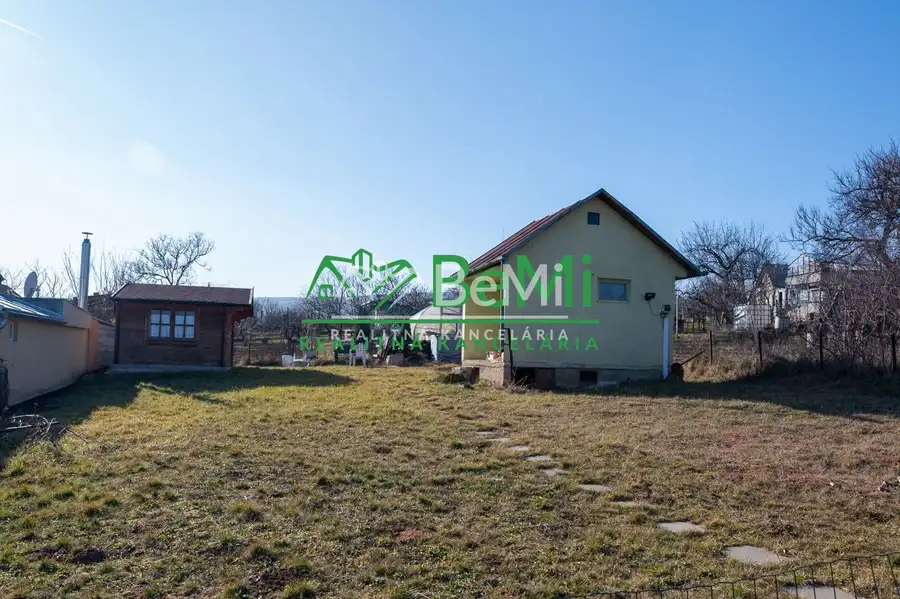
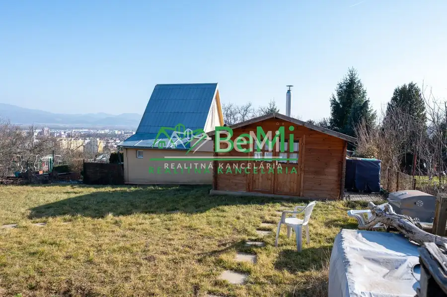
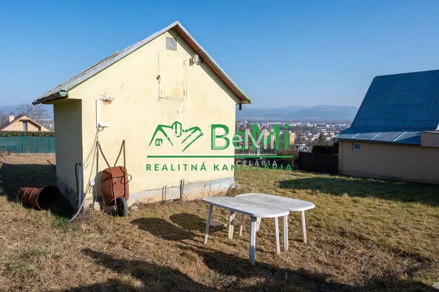
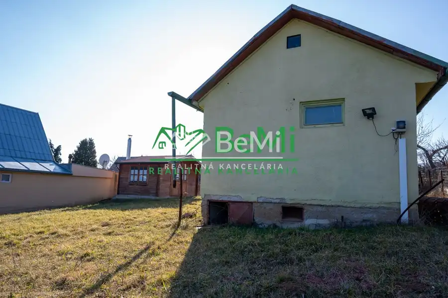
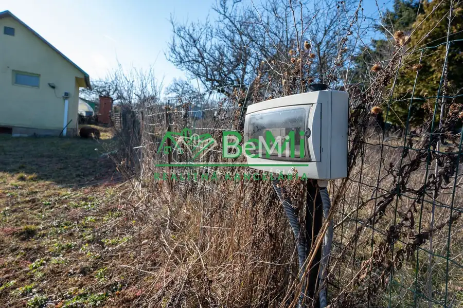
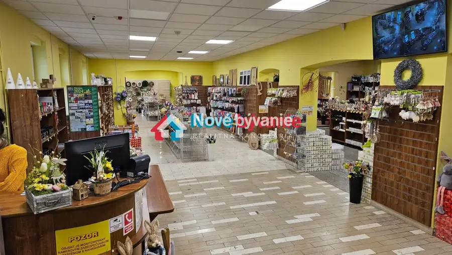
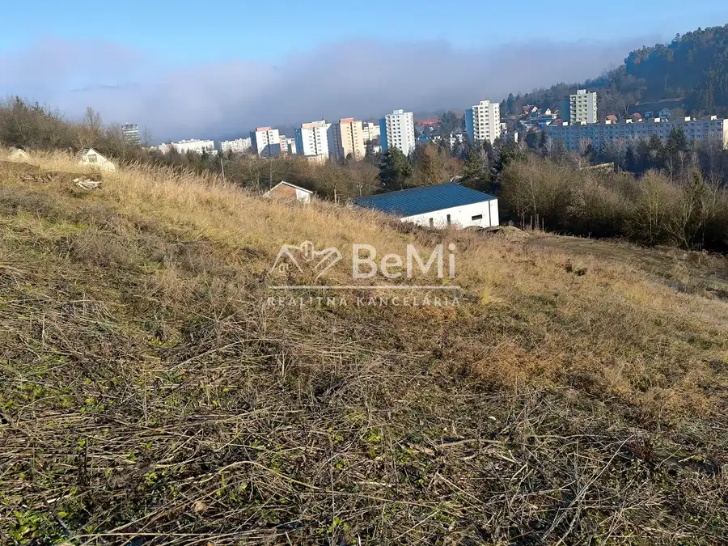
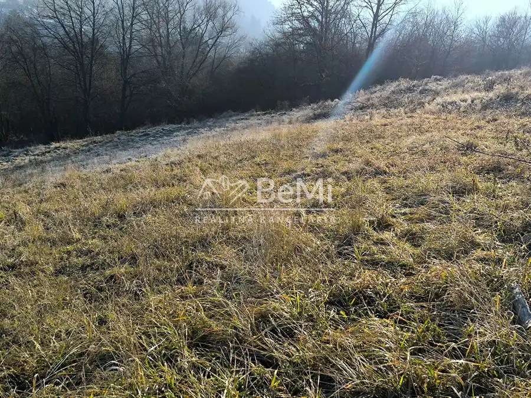

Predaj: Záhr.domček,395 m2,Nové Mesto nad Váhom(003-14-MAKS)
Nové Mesto nad Váhom





- Plocha13 m²
- StavPôvodný stav
- VlastníctvoOsobné
O nehnuteľnosti
(003-14-MAKS)Ponúkame na predaj záhradnú chatku v Novom Meste nad Váhom, ktorá je postavená na pozemku o ploche 395 m2.Murovaný podpivničený záhradný domček so zastavanou plochou 13m2 má pridelené súpisné číslo.Na pozemku je umiestnený ešte druhý drevený záhradný domček.Pozemok je slnečný, rovinatý s miernym spádom, orientácia je na juh.V súčasnej dobe je pozemok užívaní formou zmluvy so zväzom záhradkárov.Prístup autom až k pozemku.Na záhrade je vlastná elektrická prípojka a voda z miestneho vodovodu (v sezóne).Záhrada poskytuje možnosti pestovania zeleniny a ovocia či len relax a útek od mestského zhonu.Cena 25 500 €, dohoda možnáV cene je zahrnutý kompletný právny a finančný servis a cena je odsúhlasená majiteľom.Podrobnosti Vám radi ukážeme na popíšeme na obhliadke chatky.Kontakt: chrensc@realitybemi.sk, tel. +421 949 764 406
Parametre
- Druh
- Chalupa, rekreačný domček
- Dátum zverejnenia
- 03. 09. 2025
- Plocha pozemku
- 395 m²
- Počet izieb / miestností
- 1
- Počet nadzemných podlaží
- 1
- Stav nehnuteľnosti
- Pôvodný stav
- Telekomunikácie
- Internet
- Typ
- Predaj
- Typ konštrukcie
- Tehlová
- Vlastníctvo
- Osobné
- Zastavaná plocha
- 13 m²
- Úžitková plocha
- 13 m²
Kde to je


Mohlo by Vás zaujímať

Komerčné priestoryNové 2 000 €Prenájom, komerčný priestor,290m2, centrum Žiliny (001-28-TOJA) Žilina 290 m²
PozemokNové 84 800 €Predaj: Pozemok, 833m2, Považská Bystrica (203-14-PEMO) Považská Bystrica
PozemokNové 73 900 €Predaj: Pozemok, 720m2, Považská Bystrica (204-14-PEMO) Považská Bystrica